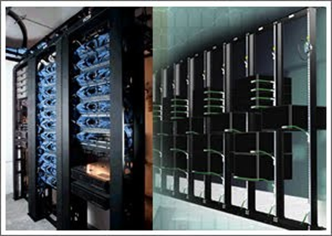
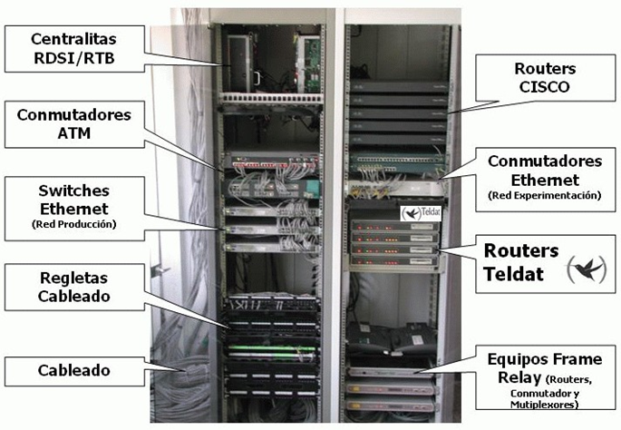

Cuarto de Comunicaciones
Características
-
Ambiente Controlado: Temperatura (20–24 °C) y
humedad (45–55 %) constantes; libre de polvo y humedad.
-
Accesibilidad y Seguridad: Acceso restringido,
sistemas de vigilancia, sensores y cerraduras.
-
Organización y Espacio: Racks, patch panels y
espacio suficiente para crecimiento y mantenimiento.
-
Iluminación Adecuada: Iluminación mínima de 500 lux
para trabajos técnicos.
-
Separación de Cableado: Separación entre cables
eléctricos y de datos para evitar interferencias.
-
Documentación y Etiquetado: Todo cableado y equipo
debe estar etiquetado y registrado adecuadamente.
Funciones Principales

-
Interconectar equipos de red: como switches, routers, patch panels,
servidores, etc.
-
Centralizar el cableado estructurado: recibe todos los cables de las
áreas de trabajo.
- Gestionar y distribuir servicios de red.
-
Proteger los equipos sensibles mediante condiciones controladas.
- Permitir mantenimiento y crecimiento del sistema de red.
Componentes del Cuarto de Comunicaciones

-
Racks o gabinetes: Estructuras metálicas donde se
montan ordenadamente los dispositivos de red y cableado.
-
Patch panels: Organizan las terminaciones del
cableado horizontal y backbone.
-
Switches y routers: Permiten la conmutación y el
enrutamiento del tráfico de red.
-
Bandejas de gestión de cables: Mantienen los cables
organizados.
-
UPS: Protege los equipos ante cortes de energía y
regula el voltaje.
-
Sistema de ventilación: Controla la temperatura
para evitar sobrecalentamientos.
-
Puesta a tierra: Protege ante descargas eléctricas.
-
Sistema de seguridad física: Puertas con
cerraduras, sensores, cámaras, etc.